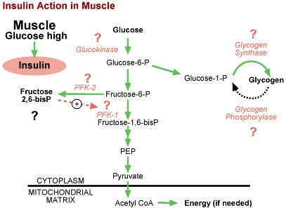

Regulation of Carbohydrate Metabolism Problem SetQuestion 8: Insulin action in skeletal muscleTutorial to help answer the questionInsulin regulates all of the following enzymes in liver. Which of these enzymes are also regulated by insulin in muscle?
TutorialThis is essentially the same figure as for insulin action in liver (question 1 of this module), and the five enzymes in question are denoted with question marks. The key for arriving at the correct answer is to determine which enzymes are missing in muscle. The Biology Project Home > Biochemistry > Regulation of Carbohydrate Metabolism > Problem Set The University of Arizona March 16, 2001 Revised: August, 2004 Contact the Development Team http://www.biology.arizona.edu |